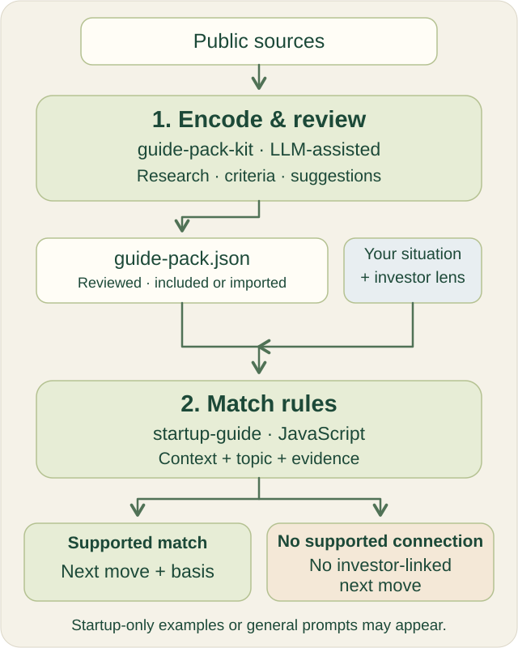

App behavior reference
Guide Packs: three inputs, one app-owned engine
Providers supply research facts, constrained matching criteria and suggestion text. Startup-guide validates all three, previews provider-declared identity and quality, and uses the included research package for new workspaces and requires explicit activation for custom imports. It never executes provider code. The v2 adapter projects those components into the established internal topic/lesson view used by the matching rules below; v1 remains supported. Compatible format is not a quality certification. V2 contract and provider examples.
The methodology in two stages
Encoding defines supported connections. Matching determines when they apply.

| Stage | Who does the work? | What it produces |
|---|---|---|
| 1. Encode and review | An author, assisted by Codex or another LLM, examines sources in guide-pack-kit. | Source-backed facts, investor topics, startup lessons and applicable contexts in guide-pack.json. Review is still required; a prompt does not establish truth or reuse rights. |
| 2. Match rules | startup-guide JavaScript applies the activated library to your saved situation and investor lens. | Applicable next moves and their basis, only when the encoded evidence and matching rules support them. No LLM runs in the app. |
Importing changes the active records, not the methodology. With no selected lens, Home may preview a supported connection from comparable profiles in the active library; it does not select an investor for you.
How to assess quality
Research quality → matching quality → suggestion quality. Each needs its own checks; a good result at one stage does not establish quality at the next.
| Quality | What good looks like | How to check |
|---|---|---|
| Research quality | Facts and connections are supported, dates are accurate, unknowns are preserved and interpretations are qualified. | Independently review records against their sources. Track the proportion of checked claims supported, unsupported connections, missed relevant facts and reviewer agreement. |
| Matching quality | Relevant connections are selected, unsupported matches are rejected and missing information is handled correctly. | Establish expected answers before running clear-match, clear-nonmatch, ambiguous and boundary cases. Track false matches, missed valid matches and expected-case pass rates. Check both rule design and its JavaScript implementation. |
| Suggestion quality | A founder understands the reason, can adapt the action and learns something useful. | Ask founders and reviewers to assess relevance, clarity and practicality, then record what the experiment taught them. Completion alone does not establish usefulness. |
LLM-assisted encoding can vary and contain errors; review does not guarantee complete accuracy. Deterministic JavaScript returns the same result for the same inputs, data and code, but bugs, incomplete rules or flawed research can still produce poor suggestions. Repeatable does not mean correct. Neither stage guarantees success.
Start with a small evaluation set containing supported connections, unsupported connections and insufficient information. Record the package/code versions, expected answers, reviewer disagreements and actual results. Report sample sizes and how cases were chosen alongside any rates; passing a small or curated set does not establish broad accuracy.
The existing automated tests check specified software behaviors. They do not independently verify research truth, establish suggestion usefulness or demonstrate improved startup outcomes. The checks above describe an evaluation approach, not completed measurements or a validated quality score.
Provider recipe self-tests
A v2 package can include provider-authored evaluation cases alongside its declarative criteria. During preview the app runs the same candidate matcher and shows expected/actual actions, differences and coverage. Cases test matching inputs and expected candidate sets, not source truth, Home priority or usefulness. No provider code is executed. Passing curated self-tests is not independent accuracy; the current real package has only no-match coverage. Case format and limits.
One connection, step by step
| Step | Fictional demo | Current research Guide Pack |
|---|---|---|
| Encode a startup lesson | Example Tool Library: explore demand with a bounded reservation test. | DoorDash January 2013: an editorial lesson to try a bounded local service, based on the launch account. |
| Encode the investor topic | Fictional Discovery Fund includes the invented customer_learning topic. | firstminute has recorded stage/sector interests, but no sourced customer-learning topic. |
| Match your context | Marketplace, idea stage and demand focus can match the lesson and selected Fictional Discovery Fund lens. | Stage/sector comparison may be possible; the investor-topic connection needed for a next move is missing. |
| Show the result | A bounded reservation exercise with clearly identified fictional evidence. | Browsing and supported comparisons; no next move connected to firstminute's priorities. |
No supported connection → no investor-linked next move. General learning prompts may still appear. The research example does not assert that firstminute invested in DoorDash. Neither matching nor encoding establishes why a startup survived or whether an investor will fund yours.
Using the app
See the visual walkthrough for setup, navigation and recording learning. This reference focuses on matching behavior and limitations.
Methodology
The public demo separates invented scenario details, authored exercise interpretations, and your self-reported observations. Rules are deterministic; there are no live AI calls, automatic research or calibrated scores.
Comparisons
Only known stage and sector labels are checked automatically. Sector matching normalizes case, whitespace, separators and a small alias list. Generalist profiles do not create sector exclusions. Unknown stage or sector information remains unknown.
A difference is a question to inspect, not a rejection. No flagged differences does not establish suitability or eligibility. Geography, team capability, technical feasibility, customer evidence and funding terms are not automatically assessed. Invented criteria weights do not generate eligibility requirements, prototypes or revenue thresholds.
The scenario comparison retains distinct quantities and units. Reservations, bookings, pilots/LOIs and revenue are not interchangeable. Missing fields remain null; missing metrics use an empty array rather than invented zero values. No similarity score is calculated.
Next-move generation
Four optional prompts are available after setup: document customer learning, record the current product approach, describe team capabilities, and choose a testable milestone.
On Home, open Investor lens → Choose, check profiles and select Use selected investors. The collapsed row shows the selected name or count; Change reopens the same picker. Investor selection is optional and filtering Explore does not change it.
Selecting an investor lens adds stage/sector questions and any illustrative rules in that profile. It also enables connected scenario exercises only when:
- Your model, stage and validation question match a lesson's explicit context.
- A selected comparable profile includes your stage and has no flagged sector difference.
- Its
preparation_topicscontains the matching topic key. - The lesson references known details and valid dated sources (or a local fictional scenario specification).
This is authored matching logic, not evidence that the exercise succeeds or that an actual investor favors it. The home screen prioritizes a matching library interpretation or unfinished source-linked move over a general prompt. It displays Based on fictional examples for bundled demo records, or Based on research sources for imported records, and includes the named records and links inside the basis details.
With no selected lens, the app can preview a matching lesson across comparable profiles in the active library. Home heads that card An example to explore and visibly states Preview from the library. No investor selected. After an explicit selection, the card states Connected through your selected investor. These are matching states, not endorsements or success claims. This paragraph describes complete-connection previews. Startup-only examples can be adapted without choosing an investor. Reviewing a preview does not select investors or create tasks. Choose Use these fictional investor examples (or Use these investor profiles for research) before making an experiment plan. Once a lens is selected, connected ideas stay within it; previews do not broaden that lens. Four general tasks remain available alongside this optional discovery flow. Untouched tasks are collapsed under Other exercises; accepting a connection adapts the corresponding task instead of adding a fifth task.
When Home offers an unsourced fallback, it labels it General exercise and shows the connection gap before the action, outside the collapsed About this exercise details. With Test demand and the milestone task selected, the action is Plan your own demand test and the button is Plan this test. It opens the existing general task with blank planning fields; it does not manufacture a library connection. If that task already has a saved experiment, Home instead shows Your current experiment and Continue editing, with About your saved plan as the disclosure label.
| Gap | What the explanation can establish |
|---|---|
| Missing investor topic | An applicable startup lesson exists and stage/sector fit is confirmed, but no compatible selected profile shares its topic. |
| Unconfirmed sector | A shared investor topic is missing and the recorded sector information does not confirm fit. The card does not claim sector compatibility. |
| Missing startup-approach rule | No lesson is encoded for this model, stage and question, even if an investor's focus is compatible. |
| Incomplete context or incompatible profiles | The card reports missing inputs or recorded stage/sector differences; it does not invent a topic connection. |
| Previously reviewed examples | No further connected moves to review, rather than claiming that a connection never existed. |
| No selected lens and no preview | No connected example for this situation yet; the active library does not supply a supported connection. |
These explanations use the same context and compatibility predicates as matching. They do not change eligibility, select other investors, generate new research or equate compatibility with endorsement. Source-linked mandate/eligibility tasks and accepted sourced plans retain their existing provenance and priority.
The examples currently cover early marketplace/service contexts: structured customer conversations and bounded reservation experiments. Fictional Discovery Fund supplies the illustrative customer-learning topic. Other profiles demonstrate formation, specialist hardware, later software stages, grants and reference-only behavior.
For example, choose marketplace, idea stage and Test demand, then select Fictional Discovery Fund. An exercise connects two invented reservation scenarios with the fund's invented interest in customer learning. Selecting only Fictional Formation Studio instead preserves stage/sector compatibility but removes the shared investor-topic connection; Home explains that gap and offers a general exercise. The quantities in those examples never become user targets. Scenarios demonstrate the software; they do not support claims about real startup history or survival.
Lessons sharing an ID merge while preserving their scenario references. Accepting an idea enriches one existing optional move rather than duplicating it. Dismiss and Review again retain their decisions for the current context.
Experiment Plans and progress
Choose Make an experiment plan to open and focus the expanded editor directly. Action and evidence fields appear first. More plan details contains learning question, continue/change/stop conditions and optional review date; Progress & notes contains status, notes and checkpoint decision. Why this plan? contains the rationale, editorial interpretation, sources and limitations, collapsed until requested. Dates are planning fields, not scheduled reminders.
Chosen plans and general exercises with recorded work appear before new suggestions and untouched general tasks. Reviewed examples collapses accepted/dismissed suggestion summaries; accepted items have Edit plan, while Review again changes the suggestion decision. It is not the plan editor.
Save progress stays reachable during editing. A successful save keeps the editor open, focuses the save control and displays an inline confirmation. Refresh retains saved fields and notes. Merely typing does not save. Storage failures are reported near the save control as well as in the workspace status.
The chosen-work board groups populated To explore, Trying and Learning recorded states; empty status columns are omitted. Untouched optional tasks are shown separately under Other exercises. A direct link to a general task opens that section and the selected editor automatically. Learning recorded requires notes. Any active experiment plan, self-authored or adapted from an example, also requires a continue, change or stop checkpoint decision. A notes-only general exercise with blank planning fields does not require a checkpoint decision. All three decisions can represent learning. These are self-reports, not independently verified evidence.
The map covers customer evidence, product evidence, team capabilities, investor lens and constraints to check. Status describes recorded work and unknowns. The progress bar counts moves with notes; it measures neither startup quality nor readiness.
Saved experiments are user work, separate from the active library connection. General exercises expose the same planning fields without attaching sources. Saving meaningful planning fields stores an experiment; merely saving notes does not create an empty experiment.
Changing the investor lens can remove or alter the supporting connection, but saved questions, actions, evidence plans, decision conditions, dates, outcomes and notes remain editable. Lens-only connection changes retain Trying or Learning recorded while displaying a review notice. Resaving acknowledges the current basis without turning a self-authored plan into a library finding. The prior plan title is retained when available.
Review notices distinguish a changed situation, changed investor lens, changed supporting connection and a missing checkpoint decision. Legacy records with no lens metadata receive a generic connection-change notice unless the app can observe the previous matching basis during a lens change. Startup changes reopen affected work for review while retaining saved fields and notes. Changes to an accepted exercise's loaded evidence basis can reopen the suggestion decision. The app does not monitor external pages. Internal function names and saved keys may retain historical terminology for compatibility; the optional demo records are explicitly fictional; the included research pack is the fresh-workspace default.
Guide Packs
See GUIDE_PACKS.md for imports, activation, compatibility and self-tests; the authoritative field contract is packs/PACK_FORMAT.md. Guide Pack Kit maintains source facts, recipes and suggestion content. No imported code runs, and supported connections remain distinct from provider quality claims.
Fictional libraries
Default records are invented examples, separately labelled from research. EXAMPLES.md contains all six investor/profile specifications and three startup scenarios, including limitations and stable source anchors. They do not establish real investor interest or startup outcomes.
Privacy and older workspaces
Your startup, imported package, selected lens, plans and notes stay in this browser's localStorage. There is no app backend or external processing. Followed external documentation links are outside this app.
Previously saved profiles are retained in browser storage but are excluded from this fictional demo's library, comparisons and investor lens. Saved startup details and notes remain available; moves referring to removed research records are not displayed. Old browser data is never packaged into a release.
This static server exposes files inside its project directory. Keep private research and raw source material outside this project and outside deployment inputs. A gitignore rule does not prevent a server from serving a file. Service workers cache the registered examples and local specifications; a new online version retires older app caches. Already downloaded or offline copies cannot be remotely recalled.
Research default and partial support
New browser workspaces use the included Research Guide Pack; saved library selections are preserved. Settings → Try demo scenarios switches to a separate fictional workspace. Use included research restores the bundled pack. Fictional scenario controls never add invented claims to research records.
| Evidence available | Behavior |
|---|---|
| Investor topic and compatible startup lesson on the same topic | Connected suggestion, subject to context rules. |
| Relevant investor topic only | Show the source-linked interest separately; any exercise is general. |
| Compatible startup lesson only | Startup-only suggestion with snapshot sources and no investor alignment; users can adapt it. |
| Neither | General exercise. |
The complete matcher and provider self-tests still require both sides. Startup-only candidates use separate snapshot-prefixed decision IDs and retain their evidence; they are not complete connections. Raw snapshots without an authored context rule remain browseable, not automatically relevant suggestions. Investor-only relevance uses an explicit app topic map: demand/customer problems → customer_learning, operations → operations, technical feasibility → technical_feasibility. Unknown topics are not inferred. Other custom topics can still form complete connections when a matching rule exists.
Compact editing
The initial plan editor shows action and evidence fields. Learning question, decision conditions and date stay in More plan details; status, notes and checkpoint decision stay in Progress & notes. Every existing field is saved whether its section is open or closed. Validation opens a hidden section before focusing a missing note or checkpoint choice. Home labels retained plans Your current experiment and shows the saved action under What you’ll try; supporting evidence remains separately disclosed. Demo entry opens the chooser without a duplicate setup form; choosing a scenario collapses it and focuses the result action. Matching, source requirements and storage identities are unchanged.